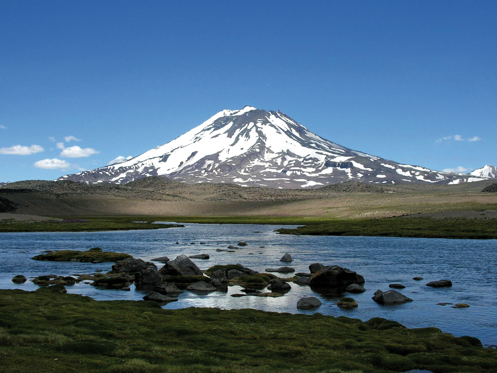

Denominada la “Tierra del sol y del buen vino”, Mendoza es uno de los destinos turísticos de la Argentina que recibe al viajero los 365 días del año no solamente con su habitual cordialidad, sino también con su más variada oferta de atractivos turísticos, difícil de encontrar reunida en un solo espacio geográfico.
Sobre Mendoza
La provincia de Mendoza es una zona de contrastes, región montañosa árida, pero surcada por caudalosos ríos con agua proveniente de los Andes. La majestuosidad de la cordillera de los Andes con su emblemático cerro Aconcagua, el más alto de América, sirve de telón de fondo a los oasis irrigados en los cuales se desarrollan las más valiosas vides que dan origen a los mejores vinos afamados en todo el mundo. El hombre, mediante canales de riego, aprovechó este recurso y transformó la región en prósperos oasis muy aptos para el desarrollo de vides y la posterior elaboración de vinos de muy alta calidad que están siendo reconocidos en todo el mundo.
Mendoza cuenta con paisajes bellísimos para visitar durante todo el año y es una provincia que ofrece muchas actividades relacionadas al turismo aventura como trekking, rafting y esquí, y experiencias únicas como visitas a viñedos y bodegas.
También destacamos la gastronomía, los festejos regionales y la más grande fiesta, la Fiesta Nacional de la Vendimia, que puntualmente realiza el primer sábado de marzo de cada año.
Bienvenidos a Mendoza
Bienvenidos, una vez llegados a la provincia de mendoza se pueden encontrar una amplia cantidad de actividades para realizar.
Desde una gran variedad de opciones gastronomicas, grandes opciones para hacer turismo aventura, o visitar las famosas regiones de Valle de Uco y San Rafael para dar prueba a una amplia carta de los vinos mas reconocidos mundialmente
Con alojamientos de calidad, la oferta de hoteles de nivel internacional, hosterías, cabañas, hostels, campings y refugios de montaña dan cuenta de las más de ocho décadas de trayectoria turística.

Historia de Mendoza
El 22 de febrero de 1561, Pedro del Castillo llegó, desde Chile, al valle de Huentata y tomó posesión de la comarca enarbolando el estandarte real.
Había sido enviado por el adelantado español don García Hurtado de Mendoza, gobernador de Chile, en cuyo homenaje fundó la «Ciudad de Mendoza del Nuevo Valle de La Rioja», el 2 de marzo de 1561. La ubicación inicial de Mendoza se situaba en lo que actualmente se conoce como La Media Luna en el Distrito de Pedro Molina, en el Departamento de Guaymallén, sobre la margen este del canal conocido actualmente como Cacique Guaymallén.
Un año después, Francisco de Villagra envió a Juan Jufré y Loayza para cambiarla de lugar, situándose el nuevo emplazamiento al oeste del canal Cacique Guaymallén, en la posición actual de la plaza Pedro del Castillo.
Según antiguos escritos, los vecinos eran muy pocos, aunque bien organizados. Desde el momento de su fundación, Mendoza tuvo estructuras políticas (Cabildo, autoridades civiles y religiosas, etc.) y urbanísticas.